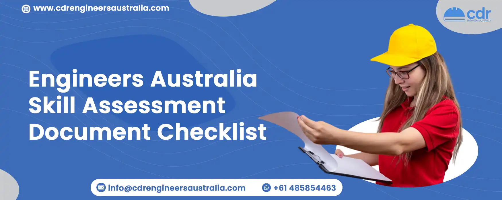

Engineers Australia Skill Assessment Document Checklist
Table Of Content
If you are an engineer wanting to move to Australia, you must go through a qualification and skills assessment process conducted by Engineers Australia. This is a requirement set out by the Australian government’s Department of Home Affairs and you will need to receive an outcome letter to be eligible to apply for a visa. Engineers Australia is officially responsible for evaluating the abilities of engineers for work in Australia, and you will be required to attain an assessment for either an accredited or non-accredited qualification as part of the process. This is usually your first step on the journey to permanent residency in Australia.
Get A 100% Success Rate Through Us
We are renowned for having a very successful team of experienced professionals in the field of CDR preparation. We provide top-notch services for CDR writing, Career Episode Writing, and plagiarism checking, among others. We take great care in ensuring all sections of the CDR are presented coherently and with high quality while paying special attention to the summary statement. Furthermore, every error and lack of information is corrected within the set timeline for Engineers Australia’s Competency Demonstration Report for Australian immigration. Our services follow the standards set by MSA (Migration Skill Assessment Booklet) and are always tailored to meet the requirements of Engineers Australia.
What is Engineers Australia Skill Assessment?
Engineering Australia’s skills assessment is a process by which the authorized staff of Engineering Australia verifies that your qualifications, work experience, and duties associated with your nominated occupation meet the standards set by the Australian Government. The result of the assessment will confirm if your credentials match the requirements to be an Engineering professional for immigration purposes.
Guidance for Skills Assessment
To get your Competency Demonstration Report (CDR) accepted by Engineers Australia in one attempt, it is important to understand the criteria and checklist necessary to apply for a Skills Assessment. Follow these simple steps:
- Read the Migration Skills Assessment Booklet carefully so you have a clear understanding of the process.
- Choose the relevant pathway for your application.
- Collect all the documents needed for your application.
- Submit your application online.
- Make sure you have a thorough understanding of the entire process.
Accredited Qualifications Checklist
You need to ensure that you provide original documents to avoid any risk that could cancel your application.
- Recent passport photo
- Passport
- Academic degree qualification
- Official academic transcript
- CV
- IELTS, PTE, TOEFL, iBT documents
- Any name change document
Non-accredited Qualifications Checklist
Individuals with an unaccredited qualification need to submit a Competency Demonstration Report (CDR) to prove they possess the necessary technical engineering knowledge and have been able to put it into practice. This report includes an overview of their Continuing Professional Development (CPD), three career episodes, and a summary of everything written. The CPD (Career Professional Development) demonstrates that you are on top of the latest advancements in your engineering field.
You must submit the CPD in a table format, which should include the name of the course, date, duration, venue, and organizer. Every career episode writing should reflect a certain period or part of your engineering work, such as university studies, a project you have worked on, or an engineering issue that you solved. After that, you need to assess the episodes with the key competency elements for your engineering occupation. This assessment must be included in the Summary Statement.
- Passport
- Latest photo
- Resume
- Official academic transcript
- Name change proof document
- English test results
- Related registration certificate
- List of CPD
- Proof of employment
- Summary Statement
- 3 Career Episodes
About Career Episode Report (Non-accredited Checklist)
The three Career Episodes form an important part of the CDR and need careful attention when being crafted. Ideally, each CDR writing should contain three distinct Career Episodes that accurately reflect the applicant’s knowledge and dedication to the field of Engineering. To ensure this is done properly, one can enlist the help of professionals. This includes collecting details about the individual’s past experiences, constructing the plot, writing the episodes, and then proofreading and editing the drafts. Contact Us for a more detailed information.
Pathways to Australia
Depending on your qualification, there are five pathways available to you for Australian immigration. These are:
- Australia Qualification pathway
- Washington Accord pathway
- Sydney Accord pathway
- Dublin Accord pathway
- Competency Demonstration Report (CDR) pathway
If your qualification is not accredited or from a non-Accord-listed country, you will have to apply through the CDR pathway. You can always count on us at CDR Engineers Australia for solving your troubles.